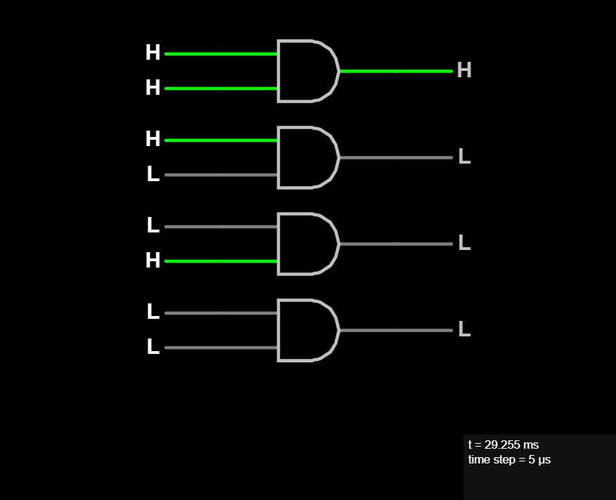

AND Gate
The AND gate takes two inputs and gives one output. The AND gate will output a HIGH (1) if and only if both inputs are HIGH (1). Otherwise it will output a LOW (0).

Another way to look at it is that an AND gate tests if two conditions are TRUE and if they are we get a TRUE response. Otherwise if either or both conditions are FALSE then we a FALSE response.
In Verilog and C like languages the bitwise AND operator is an ampersand:
Q = A & B.